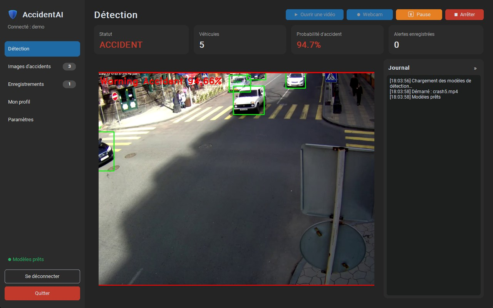

Vidéo ou webcam
Ouvrez une vidéo ou branchez une caméra : l'analyse se fait en direct, avec pause, reprise et arrêt.
AccidentAI analyse une vidéo ou une webcam, repère les véhicules et déclenche une alerte dès qu'un accident apparaît — avec captures, enregistrement et sauvegarde dans le cloud.
Recherche de la dernière version…

Ouvrez une vidéo ou branchez une caméra : l'analyse se fait en direct, avec pause, reprise et arrêt.
Au-dessus du seuil choisi, l'écran passe en alerte et une capture de l'accident est enregistrée.
Enregistrez la webcam pendant des heures ou des jours, découpée en fichiers d'une heure, et relisez-la jusqu'à 16×.
Chaque image et chaque vidéo est envoyée automatiquement, et renvoyée plus tard si la connexion manque.
Tableau de bord, gestion des comptes (créer, suspendre, supprimer) et accès aux images et vidéos de chacun.
Thème clair, sombre ou système, interface en français ou en anglais, et comptes sécurisés.
YOLOv3 trouve les voitures, bus, camions et motos dans chaque image de la vidéo.
Un réseau de neurones entraîné sur des scènes de circulation estime la probabilité d'un accident.
Au-delà du seuil, alerte à l'écran, capture enregistrée, envoi dans le cloud et entrée dans le journal.
Un accident détecté en direct : véhicules encadrés, probabilité et journal des événements.
Téléchargez le programme d'installation pour Windows, lancez-le, puis connectez-vous ou créez un compte.
Télécharger pour WindowsRecherche de la dernière version…
Le programme n'est pas signé : Windows peut afficher « Windows a protégé votre ordinateur ». Cliquez sur « Informations complémentaires », puis « Exécuter quand même ».
Oui. Le code source est disponible sur GitHub.
Non, tout fonctionne sur le processeur. La détection analyse environ 2 à 3 images par seconde sur un PC récent.
Sur votre PC, dans un dossier propre à votre compte, et une copie est envoyée dans le cloud. Vous pouvez les supprimer à tout moment depuis l'application.
Non. C'est un outil d'aide à la surveillance : il peut manquer un accident ou donner une fausse alerte. Le seuil d'alerte se règle dans les paramètres.
Les fichiers MP4, AVI, MKV, WEBM et MOV, ainsi que les webcams branchées au PC. Les caméras de surveillance fixes donnent les meilleurs résultats.